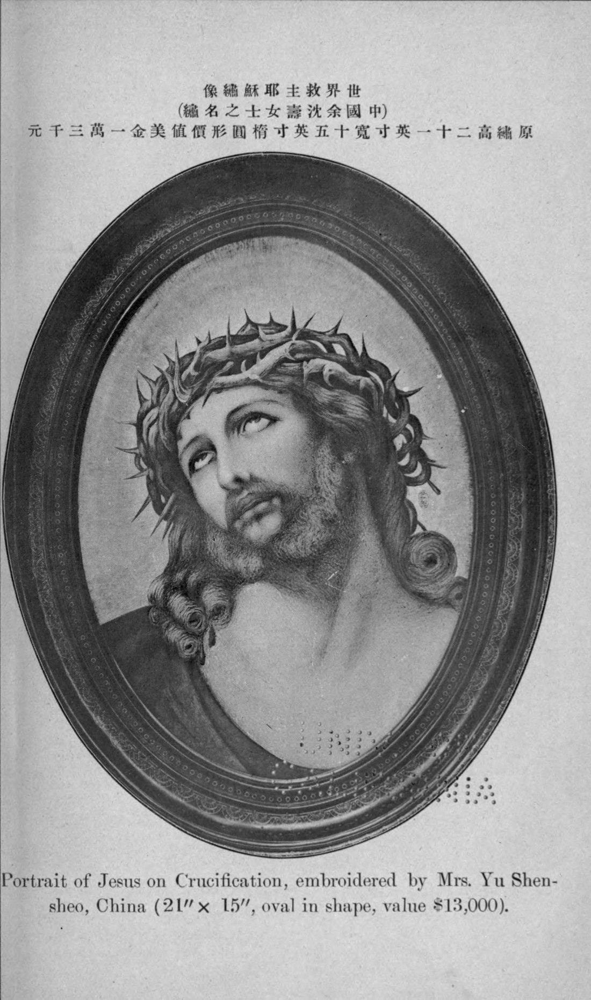
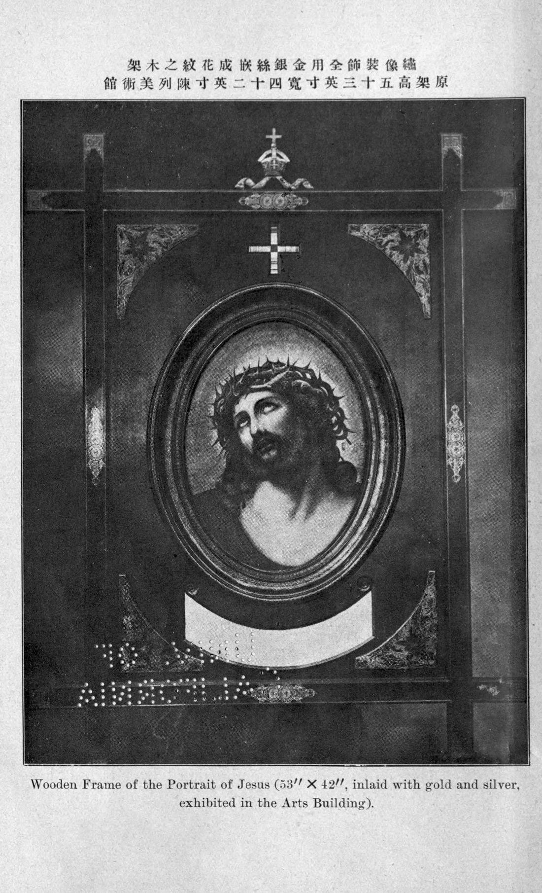
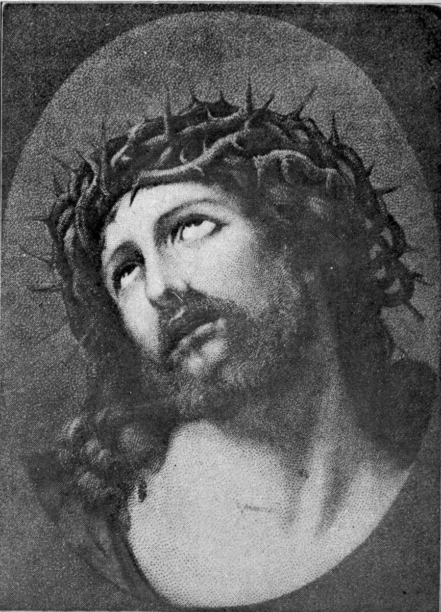
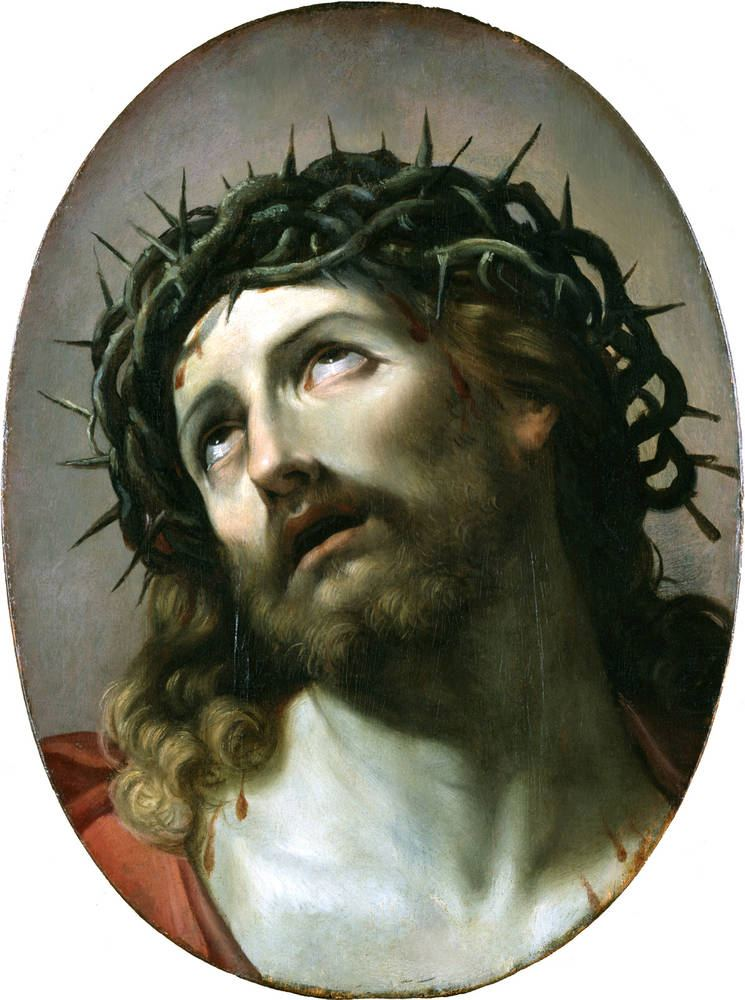
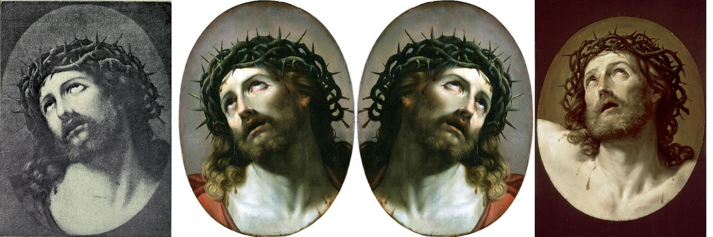
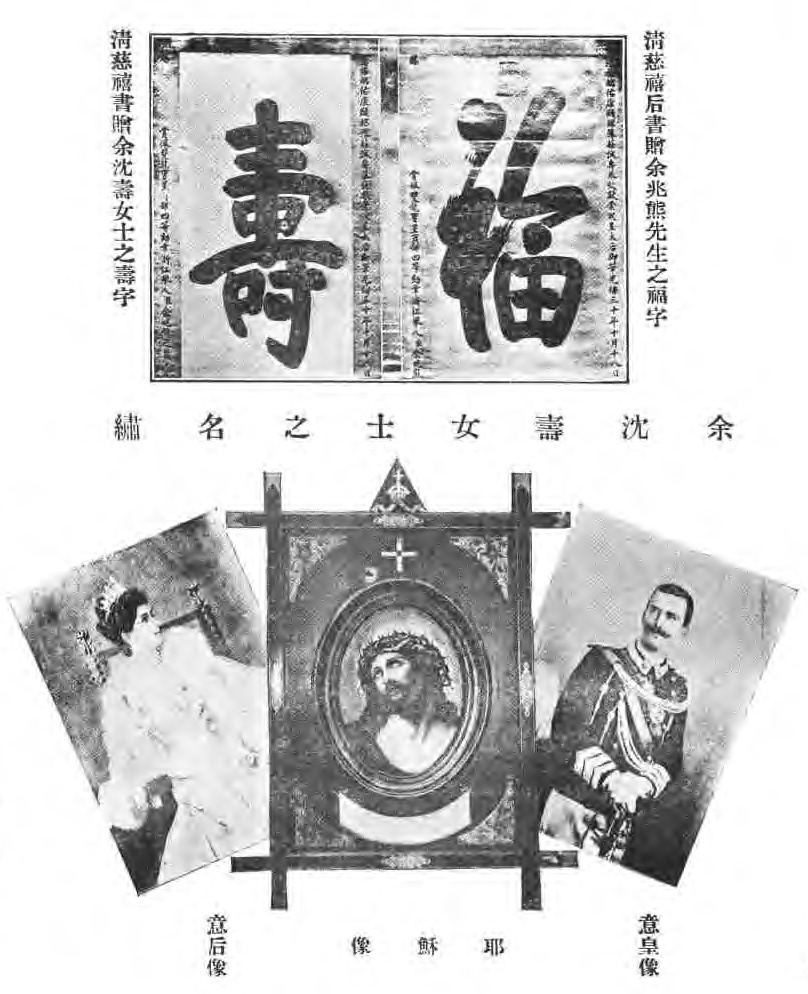
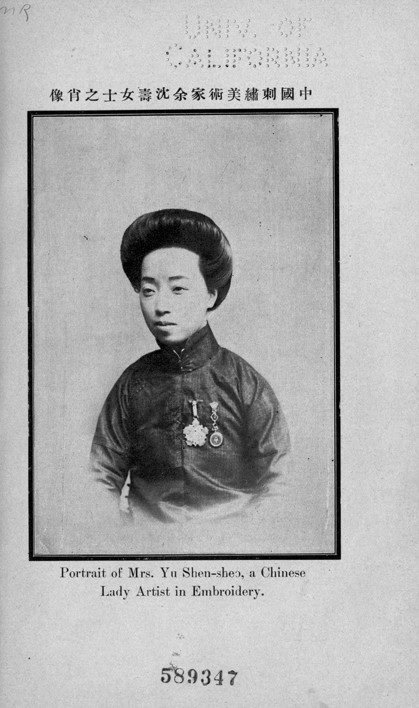
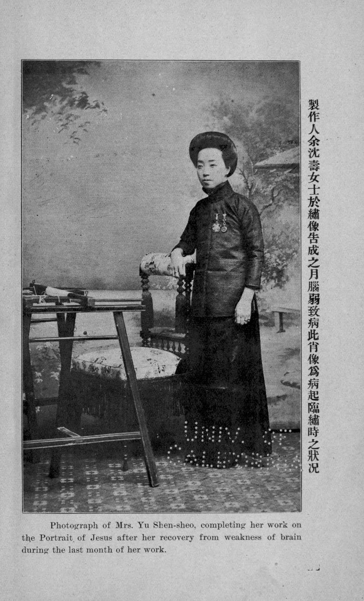

核心结论
- 基本事实以 1915 年宣传册为准已核实：作品于 1913 年 7 月开绣，1914 年 8 月完成。底本是一张 5×3 英寸的"意大利名画"明信片，由沈寿本人放大后用淡墨勾稿。所用丝线 110 色（英文本作 111 色），大多为沈寿自染，并在绣面上方各取一根绣成十字色标。标价美金 13,000 元。作品在巴拿马博览会美术馆中国部展出，目录编号第 317 号。
- 底本很可能是圭多·雷尼的画，但不在卢浮宫待专家核实：明信片与德累斯顿历代大师画廊藏 Guido Reni《戴荆冠的基督》（Gal.-Nr. 323）高度一致。这是整理者的视觉比对结论。"原画藏卢浮宫"之说与卢浮宫藏品不符存疑；"颜文梁绘稿"之说未见证据存疑。
- 针法依据沈寿本人的论述已核实：《雪宧绣谱》系统讲述了旋针（沈寿自创）、虚实针、散整针和多色合穿一针，并直接以《耶苏像》为例。"旋针绣眼球、虚实针绣眼白"等具体部位的说法目前只见于二手资料待核实。
- "巴拿马一等大奖"有疑问存疑：1915 年美术部官方获奖目录中，第 317 号没有任何获奖标注。
- "只展不卖"之说与一手资料矛盾存疑：宣传册明码标价，较可能的情况是标价过高，没有卖出。
标签说明：已核实 表示有一手文献或官方来源支持；待核实 表示仅见于二手资料；存疑 表示来源互相矛盾，或与一手文献冲突。
画面讲解
构图
作品为竖椭圆画幅，绣耶稣胸像。头部向画面左上后仰，戴荆冠，额上血迹下流。卷发和须髯垂到两肩，左肩露出一角暗色披衣（底本中为红色），颈部和胸口大面积受光。装框为四端出头的十字架形木框，嵌金银，上方是用全部色线各一根绣成的十字色标。已核实（1915、1919 照片）
尺寸：宣传册正文记绣面 21.5×16 英寸（约 54.6×40.6 cm），画框 54×40 英寸；南博及百科资料作 54.8×39.4 cm，两者基本吻合。
光影与表情
光从左上方来，额、鼻梁、颧骨、颈胸为亮面，眼窝、鼻下、须下为暗面学术二手，目测一致。双眼上翻，嘴唇微启，表现受难时的痛苦和仰望。
衣褶
画面只在肩部露出一角披衣，几乎没有衣褶可谈。因此"仿真"效果主要靠面部肌肤、须发和荆冠来完成。
底本
宣传册只说是"意大利国之名画"，没有写画家姓名；《雪宧绣谱》说"稿本油画……皆本于摄影"。比对结果见下方图片一节。雷尼一类"荆冠基督头像"有很多摹本和工作室版本，所以德累斯顿 323 号只能算"最接近"的原画。
针法
沈寿自述（《雪宧绣谱》，1919）已核实
| 针法 | 原文要点 |
|---|---|
| 旋针 | "回旋其针也……针与之为拳曲、蜿蜒、漩激，皆宜短针。""旋针昔所无，余由散针、接针之法悟入而变化之。" |
| 散整针 | "浓处用套针细线，即整针也；淡处用接针、长短施针，极淡处用稀针、尤细之线，即散针也。" |
| 虚实针 | 人面"按光线阴阳之部位，用旋针及纵横参错之短针"；阴面用实针，阳面"由稀而细，而淡，而至于无，使与地等，所谓虚也"。 |
| 拼色 | "若余绣《耶苏像》，稿本油画……乃合二三色穿于一针，肖焉。" |
"此绣针法，处处旋转……画笔易旋，针线难旋。"——1915 年宣传册中沈寿的中文自述
用于本作的具体部位二手资料，未见微距图
| 部位 | 处理 |
|---|---|
| 面部 | 丝理随肌肉和受光转折而旋转，打破传统人物绣的单向丝理（南博简介称"旋转丝理"） |
| 眼球 | 旋针、极细线、针脚细密 |
| 眼白 | 虚实针：近瞳仁处疏虚，近眼角处渐密；高光处留出底料（"留白借底"） |
| 须发 | 几种颜色合穿一针，用滚针或施针、接针、套针组合，表现卷曲 |
| 散整针 | 没有资料明确指出用在哪个部位；按原理，可能用于浓淡过渡处，此为推测 |
历史背景
沈寿生平
| 年份 | 事件 |
|---|---|
| 1874（另说 1871） | 生于江苏吴县，原名沈云芝，号雪宧生年两说 |
| 1904 | 慈禧七十寿辰时进献绣品，获赐"福""寿"二字，从此改名沈寿已核实 |
| 约 1905 | 赴日本考察刺绣，任农工商部绣工科总教习职务待核实 |
| 1910 | 南洋劝业会（南京）获一等奖自述 |
| 1911 | 《意大利皇后像》在都灵博览会获"卓绝奖"。宣传册记为 1912 年，赵明远考证应为 1911 年 |
| 1914 | 任南通女工传习所所长，被派为巴拿马博览会出品代表已核实 |
| 1919 | 《雪宧绣谱》出版（沈寿口述，张謇笔录） |
| 1921 | 卒于南通 |
顾绣与仿真绣
顾绣（露香园绣）以画入绣，绣人面"皆套针"，不表现阴影。沈寿自注："彼时泰西有影之书，已有入中国者，未以入绣。"沈寿熟悉顾绣，张謇在序中记她能凭针法认出一件露香园绣。她自述"既见欧人铅油之画，本于摄影。影生于光，光有阴阳，当辨阴阳……以新意运旧法"。她的创新可概括为：求光、旋转丝理、虚实渐变、多色合针、自染色线、肖神。虚针、肉入针是她游日本时参观所得，但她称"非由日本绣师之指授"。已核实（绣谱） 南通仿真绣于 2008 年列入国家级非物质文化遗产名录。
1915 年巴拿马博览会获奖存疑
中文资料普遍说作品获"一等大奖""金奖"或"最高级大奖章"，较早的出处是高剑华 1919 年所作小传，赵明远指出这篇小传错误很多。但 1915 年美术部的官方目录（With Awards，两个版本）和 Catalogue de luxe 都把第 317 号 "Embroidered Portrait of Jesus Christ" 列为无获奖标注，而同在中国部的其他展品标有 Silver Medal、Honorable Mention 等奖项。可能的解释有三种，都未经证实：一是奖项记在其他部门名下；二是计入了张謇或中国团体所获的 Grand Prize；三是中文资料以讹传讹。陈琪编《中国参与巴拿马太平洋博览会记实》（1917）中可能载有得奖表，尚未查阅。
关于出售：宣传册标价 13,000 美元，屠坤华游记（二手转引）称"惜定价太昂"；而"富商求购、沈寿不卖"的说法与此冲突。
入藏南京博物院经过存疑
人民网 2010 年文章的说法是：沈寿临终前把作品赠给张謇，藏于南通博物苑；抗战时存放在上海一家银行的保险柜，此后下落不明；1970 年代由张謇海外亲属寻获，1980 年代末带回国捐赠南博。百度百科则记为 1986 年 4 月 27 日，由江苏省政府举行仪式，张绪武代表家属捐赠。两种说法的时间不完全一致，需要用南博档案核对。2007 年作品被列为南博"18 件镇院之宝"之一，这一说法来自媒体待核实。
图片
沈寿于 1921 年去世，作品本身已进入公有领域。以下历史照片均出自 1915 年或 1919 年的出版物，可自由使用。现代博物馆或媒体拍摄的照片版权归拍摄方，本页没有转载。暂缺彩色高清图和针脚局部图。










另有一张：人民网 2010 年文章配图（黑白，371×500）。仅限课堂使用，版权归人民网或原摄影者，本页不转载，请看原文存档。
线上浏览
结论：没有找到这件作品的博物馆数字展厅、高清放大浏览、Google Arts & Culture 条目或线上专题展。目前能在线看到的官方彩色图只有南博官网上的一张小图（304×401）。可以放大浏览的只有 1915 年宣传册中的黑白历史照片。以下链接均于 2026-10-27（UTC+8）用 curl 或浏览器实测。
| 页面 | 能否打开 | 清晰度 | 官方 | 说明 |
|---|---|---|---|---|
| 南京博物院官网"耶稣像刺绣"图（出现在官网 404 页的展示卡上） | 可以（200） | 彩色，304×401，低，不能放大 | 是 | 目前唯一能找到的官方彩色图，附一句简介；官网藏品库中没有找到这件作品的条目 |
| Internet Archive：1915 年宣传册在线阅读器 | 可以（200） | 黑白网点印刷，可放大，看不到针脚 | 图书馆扫描（一手文献） | 能在线放大浏览的唯一来源 |
| 南京博物院"数字文物之美"（三维数字文物库） | 可以（200） | — | 是 | 数据表共收 82 件，以陶瓷、铜器、玉器为主，没有《耶稣像》 |
| Google Arts & Culture 搜索"Shen Shou" | 可以（200） | — | — | 没有相关条目；南京博物院合作方页面返回 404；"Masterpieces of Su Embroidery"专题里也没有沈寿 |
| Made-in-China：Shen Shou, a Recognized "Sage of Embroidery" | 可以（200） | 黑白装框照，340×421，低 | 否（商业网站） | 只能作参考 |
| 人民网文史 2010（网页存档） | 可以（200） | 黑白，371×500，低 | 否（媒体） | 仅限课堂使用 |
| Prezi：The Portrait of Jesus | 可以（200），需开启 JS | 未评估 | 否（个人演示文稿） | 不建议引用 |
| 微信百科：民国沈寿绣品《耶稣像》 | 可以（200），浏览器直接打开 | 彩色，321×448，低，构图与南博官网图一致 | 否（用户编辑的百科） | 正文与百度百科同名条目相同，没有列参考文献；可当作百度百科打不开时的替代。完成年份未写；获奖记为"一等大奖"（存疑）；入藏记为 1986-04-27 张绪武捐献（待核实）；底本画家记为"琪特"，未写原画名称 |
| 百度百科：民国沈寿绣品《耶稣像》 | 页面存在，但脚本访问时被验证页拦截 | 未评估（页面带放大查看器） | 否 | 需要在浏览器中手动打开 |
| 中国丝绸博物馆"云上展览" | 连接失败（实测无响应） | — | 是 | 检索结果也未提到沈寿 |

另外，南京博物院的微信公众号（"品南博"菜单）和馆内展签扫码导览可能有图文介绍，这些只能在微信里打开，没有测试。
存疑与缺口
- 获奖等级：官方目录中没有获奖标注，与"一等大奖"说法冲突。待查《记实》得奖表。
- 出售："只展不卖"与 13,000 美元标价冲突；"已售出"之说又与后来的流传经过冲突。
- 底本：雷尼德累斯顿 323 号属视觉判断；"卢浮宫说"不成立；"琪特《荆棘冕冠》"这一译名来源不明；宣传册所引"德国画家 Stanbo"的故事待考。
- 完成时间：一手资料为 1914 年 8 月，二手资料多写 1915 年。
- 色数：110 色还是 111 色；"劈丝 1/7"之说没有出处。
- 生年：1874 年还是 1871 年。
- 入藏："1986 年捐赠"与"80 年代末带回"两说并存。
- 颜文梁绘稿说：没有证据，且与宣传册"绣者自行放大勾稿"的记载冲突。
- 缺口：没有南博藏品条目，没有高清彩色图或针脚微距图，也没有任何数字展厅或放大浏览（见线上浏览）；ctext、百度百科、维普、De Gruyter（Doris Sung 2024）被拦截或需付费，没有读到。
参考来源
可靠度：A 为一手文献或官方，B 为学术，C 为主流媒体或专业机构，D 为百科或普通网站。访问日期：2026-10-27（UTC+8）。
| # | 来源 | 年份 | 可靠度 | 要点 |
|---|---|---|---|---|
| 1 | Panama-Pacific International Exposition: Yu Shen Sheo（宣传册） | 1915 | A | 时间、底本、色数、标价、照片 |
| 2 | 沈寿述、张謇录《雪宧绣谱》（转录本） | 1919 | A | 针法定义、《耶苏像》 |
| 3 | Official Catalogue of the Dept. of Fine Arts, PPIE (With Awards) | 1915 | A | 第 317 号无获奖标注 |
| 4 | 同上，插图版 / Catalogue de luxe vol.2 | 1915 | A | 同上 |
| 5 | 高剑华编《治家全书》图版 | 1919 | A | 早期照片 |
| 6 | Guido Reni, Christus mit der Dornenkrone, SKD Gal.-Nr. 323 | 17 世纪 | A | 最可能的原画 |
| 7 | 赵明远《沈寿作品若干史实新证》 | — | B | 史实考辨 |
| 8 | Jiang & Lin, Embracing Difference (ACAH2020) | 2020 | B | 光影与针法分析 |
| 9 | Doris Sung, Women of Chinese Modern Art（付费，未读） | 2024 | B | 雷尼、土山湾画馆 |
| 10 | 央广网 / 东方早报：刺绣耶稣像赴美"只展不卖" | 2010 | C | 眼部针法 |
| 11 | 人民网文史："绣娘"沈寿用神针征服……世博会 | 2010 | C | 生平、流传 |
| 12 | 人民网：中国沈绣艺术展亮相澳门 | 2021 | C | 非遗、底本译名 |
| 13 | 光明网《文摘报》："绣圣"沈寿 | 2018 | C | 卢浮宫说（存疑） |
| 14 | 中国苏绣艺术博物馆："耶稣像"复制件 | 2020 | C | 丝理、须发针法 |
| 15 | 翁雪宝《刺绣艺术创造之浅见》 | 2006 | C | 旋针眼球、虚实针眼白 |
| 16 | 百度百科：耶稣像（被拦截） | — | D | 尺寸、1986 年捐赠 |
| 17 | 微信百科：民国沈寿绣品《耶稣像》 | 2026 年访问 | D | 与百度百科条目文字相同；尺寸、1986 年捐赠 |